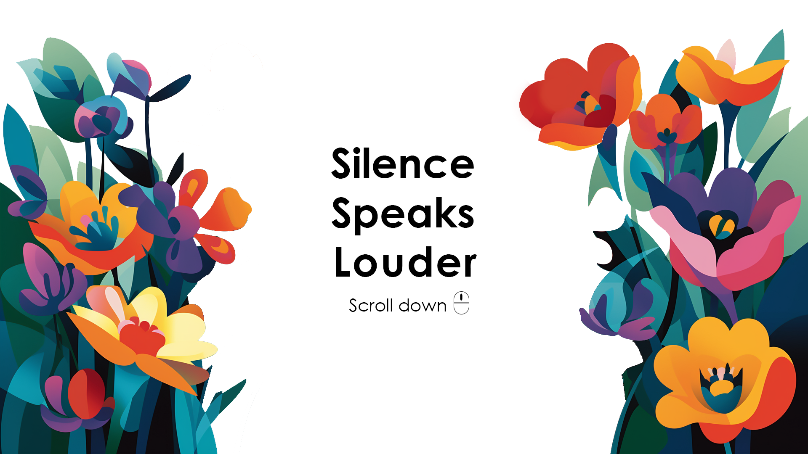
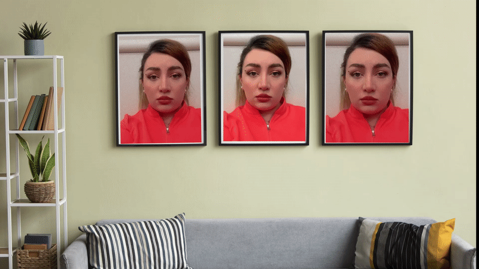

Have you ever considered that even in moments of silence,
there may still be a sound lingering in the background?
there may still be a sound lingering in the background?

Beneath every facial expression
a world of thoughts and emotions,
waiting to be discovered
without the need for words.
a world of thoughts and emotions,
waiting to be discovered
without the need for words.
Watch out!

You may not hear this crowd,watch your steps
have you ever imagined their
scream under the water too?
scream under the water too?

By listening the nature's frequencies,
allow them to nourish you,
everything has a language
to speak to you!
allow them to nourish you,
everything has a language
to speak to you!

By being observer&listener
you'll become one of the symphonies
of this composition named
WORLD
"Shaghayegh Ashouri"
you'll become one of the symphonies
of this composition named
WORLD
"Shaghayegh Ashouri"